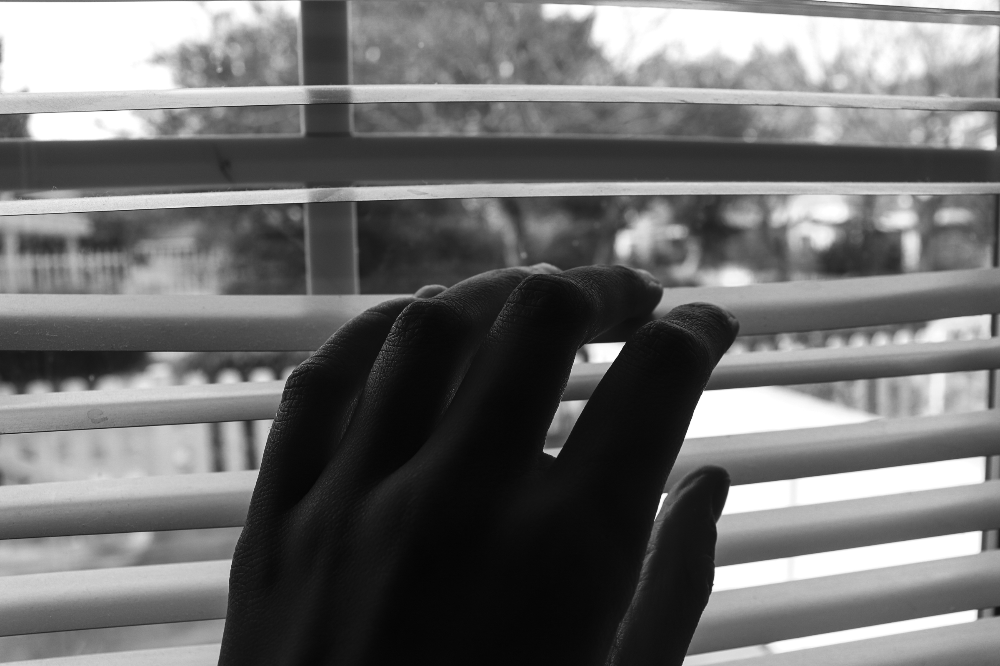
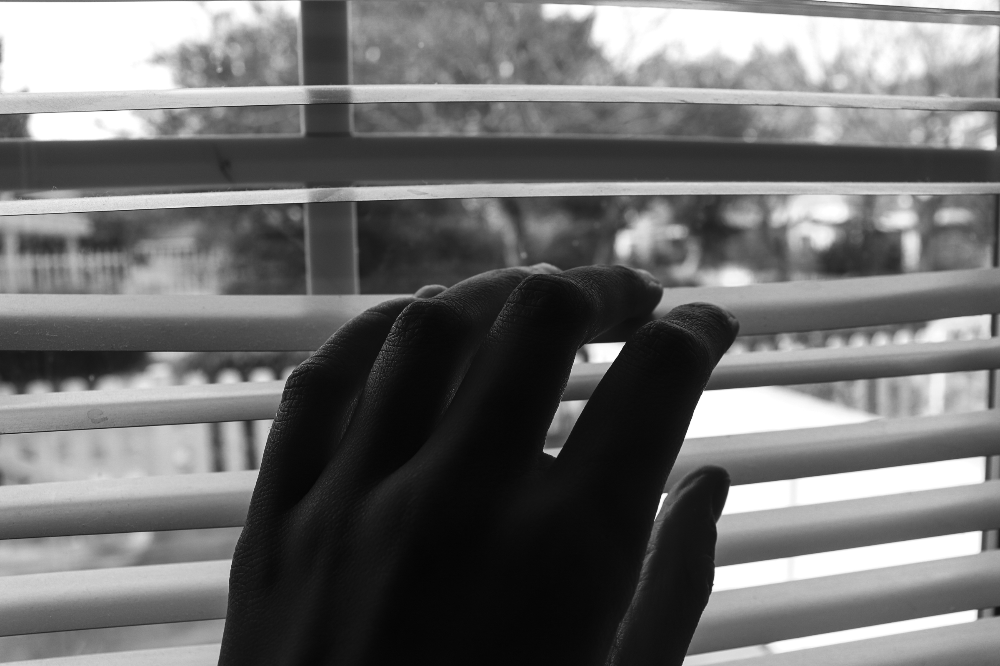
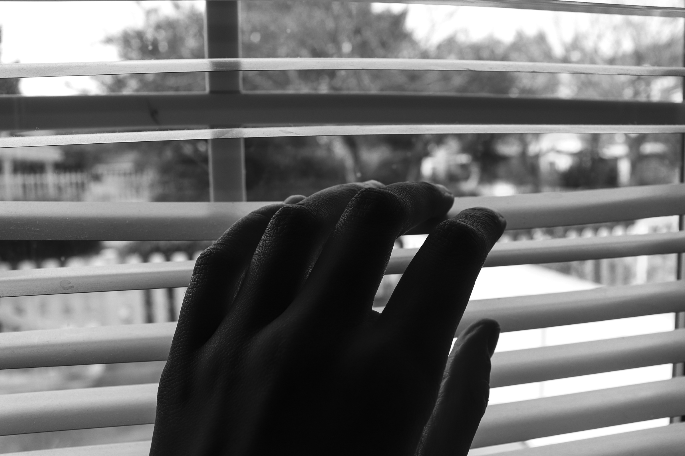

This page contains all of the photos that I took in my PHOT 40 class. In this course, I learned how to take pictures in black and white using a DSLR camera. I learned how to operate certain features of a DSLR camera such as the f-stop, ISO, and shutter speed.
